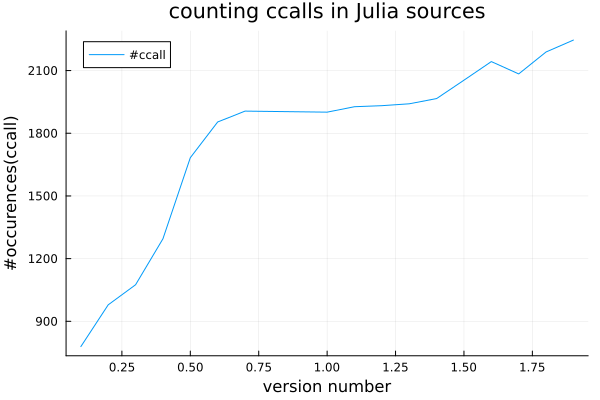

ccallPortée de l’exposé
On s’intéresse ici au fait que Julia appelle d’autres languages et pas l’inverse. Cependant Julia peut appeler un code qui appelle lui-même Julia
Portabilité
certaines choses sont spécifiques à Linux, ou à unsystème POSIX et n’ont pas été testés sous OuïneDoze. La plupart des des éléments du TP peuvent être fait sur Arctic
ccallccall dans les sources de Julia ?
ccall en CÉcrivez dans le fichier skel.c la fonction
au moyen de \(\tt{x} \in \{\tt{vi}, \tt{emacs}, \tt{nano}\}\)
Compilez le fichier : remarquez --shared et .so (.dylib on OSX 🤔)
Dorénavant, vous pouvez appeler ajoute2 au moyen de
ajoute2 est un symbole de ajoute2.so \(\Rightarrow\) :(Int32,) et pas (Int32) (Tuple)Int32 par Int64 or Float64.| statique (.a) | dynamique(.so) | |
|---|---|---|
| relogeable | ✔️ | ✔️ |
| non relogeable | ✔️ | ❌ |
Décoration de noms (mangling) : processus d’encodage de noms de symboles dans un binaire
permet de gèrer des languages non natifs “autre que le C”
permet la surcharge
ccall en FortranMettez dans le fichier skel.f90 la sous-routine suivante
Compilez le fichier
Dorénavant, vous pouvez appeler ajoute2 au moyen de
:ajoute2_ utilise la décoration de nom (nm -D ajoute2.so)Ref{Int32}Int32 par Int64 ou Float64 \(\Rightarrow\) Was ist den loss ?Mettez dans le fichier skel.cpp la fonction suivante
Compilez le fichier
Dorénavant, vous pouvez appeler ajoute2 au moyen de
Ref{Int32}extern "C" pour rendre l’appel compatible avec du CPour des projets compliqués 🢣 CxxWrap.jl
Mettez dans le fichier ajoute.rs la fonction suivante
Compilez le fichier
Dorénavant, vous pouvez appeler ajoute2 au moyen de
pub extern "C" pour rendre l’appel compatible avec du Cconsidérons le code suivant
on va le nourrir en Julia avec une matrice
Pour importer une matrice de type T, on utilise Ptr{T}
soit le code
appel en Julia
Remarques :
iso_c_binding 🢣 c_double, int_64_tvalue 🢣 pas besoin de réferencex(:,:) (assumed-shape arrays)alloc.c
gcc -fPIC --shared -o liballoc.so alloc.cdlopen et dlsymGrâce à l’appel système dlsym, on peut associer une adresse à un symbole
alloc_table.jl
Warning
À vous de jouer :
ccall pour set_values, get_values, my_free dans alloc.jlalloc.f90 est aussi disponible pour les ceusses qui veulentLibc. On peut donc l’appeler directement comme dans les appels suivantsunsage_wrap
unsafe_wrap(Array, pointer::Ptr{T}, dims; own = false)
Wrap a Julia Array object around the data at the address given by pointer, without making a copy. The pointer element type T determines the array element type. dims is either an integer (for a 1d array) or a tuple of the array dimensions. own optionally specifies whether Julia should take ownership of the memory, calling free on the pointer when the array is no longer referenced.
alloc.c et alloc.jl pour renvoyer directement des tableaux en Julia, plus besoin de get_values et set_valuespointer(x) : recupère l’adresse d’un objetunsafe_store!(p, val, ind) 🢣 p[ind] = valunsafe_load(p, ind) : renvoies p[ind]truc.c avec les symboles de déverminage (-g)GNU gdb(gdb) file julia
(gdb) set args -L truc.jl
(gdb) set breakpoint pending on
(gdb) b truc
❌️ Function "truc" not defined.
Breakpoint 1 (truc) pending.
(gdb) run
(...)
Enable debuginfod for this session? (y or [n]) n
Thread 1 "julia" hit Breakpoint 1, truc (x=0x7fffed2431a0) at truc.c:3
3 *x += 2;
(gdb) p *x
$1 = 0
(gdb) n
4 printf("%d", x);
(gdb) p *x
$2 = 2gdb -p $(pgrep julia) mais il faut désactiver /proc/sys/kernel/yama/ptrace_scope@cfunction génère une un pointeur de fonction appelable depuis le C/Fortranapply_f.c
Float64mon_paquet_jll.jl{fig-align=“center”, width=400}
cours magicien, cours! 😉
julia> using BinaryBuilder
julia> BinaryBuilder.run_wizard()
o `.
o*o \'-_ 00000000: 01111111 .
\\ \;"". ,;.--* 00000001: 01000101 E
\\ ,\''--.--'/ 00000002: 01001100 L
:=\--<' `"" _ | 00000003: 01000110 F
||\\ `" / ''-- 00000004: 00000010 .
`/_\\,-| | 00000005: 00000001 .
\\/ L
\\ ,' \
_/ L' ` \ Join us in the #binarybuilder channel on the
/ / / / community slack: https://julialang.org/slack/
/ / | \
"_''--_-''---__=; https://github.com/JuliaPackaging/BinaryBuilder.jl
(...)ou partir d’un build_tarballs.jl et l’adapter a la mano
build_tarballs.jlusing BinaryBuilder
name = "libfoo"
version = v"1.0.1"
sources = [
ArchiveSource("<url to source tarball>", "sha256 hash"),
]
script = raw"""
cd ${WORKSPACE}/srcdir/libfoo-*
make -j${nproc}
make install
"""
platforms = supported_platforms()
products = [
LibraryProduct("libfoo", :libfoo),
ExecutableProduct("fooifier", :fooifier),
]
dependencies = [ Dependency("Zlib_jll"), ]
build_tarballs(ARGS, name, version, sources, script, platforms, products, dependencies)build_tarballs.jlsources : origine des sources
peut être du type GitSource, ArchiveSource, DirectorySource ou FileSource
script : chaîne multilignes contenant le script de compilation. Fait souvent appel à Make ou CMake
platforms : tableaux des plateformes cibles de compilation. Disponible à l’aide de supported_platforms
products : résultats de compils, à archiver dans le paquet binaire. La plupart du temps des bibliothèques
dependencies : autres paquets Julia dont on peut dépendre
copier alloc.c et/ou alloc.f90 dans un sous-repertoire
sources \(\Rightarrow\) utiliser DirectorySource sur le sous-répertoire
ajouter dans le sous répertoire le CMakeLists.txt suivant
script : utiliser le script suivant
ajouter un fichier de licence dans le sous-répertoire
platforms : se limiter à linux avec libc="glibc" et utiliser
products : selectionner liballoc et/ou liballoc_f
dependencies : commencer par des dépendances vides =[] et rajouter la dépendance suggerée par Julia
lancer la compil avec julia build_tarballs.jl --deploy=local
Avis à la population
N’essayer pas sur Arctic, vous manqueriez de privilèges spéciaux pour utiliser RootFs
copier une recette
Vous pouvez vous inspirer de la recette pour N2QN1
Clang en tant que compilateur possède un analyseur syntaxique avec une API
Clang.jl l’utilise pour générer des interfaces
exemple : MPI.jl contient un fichier MPIGenerator.jl
(...)
signatures() = begin
(...)
include_dir = normpath(artifact_dir, "include")
args = vcat(get_default_args(), "-I$include_dir") # add compiler flags
headers = if MPIPreferences.binary == "MPICH_jll"
push!(args, "-include$include_dir/mpi.h")
joinpath(include_dir, "mpi_proto.h")
elseif MPIPreferences.binary == "OpenMPI_jll"
joinpath(include_dir, "mpi.h")
end
ctx = create_context(headers, args, options)
build!(ctx) # run generatoralloc.cécrire alloc.h à partir de alloc.c (retenir les declarations)
créer un fichier generator.toml
créer le script generator.jl
using Clang.Generators
cd(@__DIR__)
include_dir = pwd() # ou le chemin absolu, nahi duzuen bezala !
options = load_options(joinpath(@__DIR__, "generator.toml"))
args = get_default_args()
push!(args, "-I$include_dir")
headers = [ joinpath(include_dir, "alloc.h")]
ctx = create_context(headers, args, options)
build!(ctx)generator.jlPyCall.jl : permey d’appeler directement du Python
exemple : PyPlot.jl utilise PyCall.jl
import d’un symbole Python au moyen de @pyimport
configuration
on souhaite lire le maillage VTK non-structuré suivant
afin de le stocker dans la structure
using PyCall
@pyimport vtk
function readMeshFromFileVtk(fileName::String)
reader=vtk.vtkUnstructuredGridReader()
reader["SetFileName"](fileName)
reader["Update"]()
out = reader[:GetOutput]()
pts = out[:GetPoints]()
pointsData = pts[:GetData]()
clls = out[:GetCells]()
cllData = clls[:GetData]()
nbCells = out[:GetNumberOfCells]()
i=1
cellIdx = 1
cells = fill(Int32[], nbCells)
while i < length(cllData)
currentCellSize = cllData[i]
cells[cellIdx] = cllData[i+1:i+currentCellSize]
i += currentCellSize+1
cellIdx += 1
end
return Mesh(pointsData, cells)
endRCall.jl permet d’appeler du R depuis Julia
Explications :
R"""ma_chaîne_en_R""" renvoies un objet Rrcopy(obj) convertit en copiant obj en Julia$ à l’intérieur de permet d’appeler du code Julia (interpolation)Choisir son interprète : si vous n’aimez pas Conda (comme moi 😠)
import de data frame R
julia> df_ju = rcopy(reval("iris"))
150×5 DataFrame
Row │ Sepal_Length Sepal_Width Petal_Length Petal_Width Species
│ Float64 Float64 Float64 Float64 Cat…
─────┼─────────────────────────────────────────────────────────────────
1 │ 5.1 3.5 1.4 0.2 setosa
2 │ 4.9 3.0 1.4 0.2 setosa
3 │ 4.7 3.2 1.3 0.2 setosa
4 │ 4.6 3.1 1.5 0.2 setosa
5 │ 5.0 3.6 1.4 0.2 setosa
⋮ │ ⋮ ⋮ ⋮ ⋮ ⋮
141 │ 6.7 3.1 5.6 2.4 virginica
142 │ 6.9 3.1 5.1 2.3 virginica